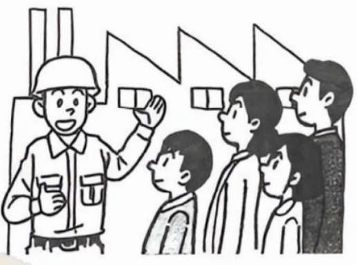

1 いえの前で 工事を しています。
もんだい1 の ことばは ひらがなで どう かきますか。 1・2・3・4から いちばん いい ものを ひとつ えらんで ください。
（れい）これは ひとつ 千円です。
（かいとうようし）
| （れい） | ① | ② | ③ | ● |
2 すずきさんはそっちを 持って ください。
3 おふろで子どもの 体を あらいます。
4 来月 入院する ことになりました。
5 このアパートのほうが少し 広いです。
6 もう 考えましたか。
7 わたしは 親指 がみじかいんです。
もんだい2 のことばはどう かきますか。 1・2・3・4からいちばんいいものを ひとつ えらんでください。
（れい）この本を よんでください。
（かいとうようし）
| （れい） | ① | ② | ● | ④ |
8 今日は さむい ですね。
9 日本は今 あさ です。
10 はやしさんの せつめいは わかりやすかったです。
11 今、 くうこうに います。
12 天気のいい 日はえきまで はしって います。
もんだい3（ ）になにをいれますか。 1・2・3・4から いちばんいい ものをひとつ えらんでください。
（れい）ざっしが2（ ）あります。
（かいとうようし）
| （れい） | ● | ② | ③ | ④ |
13 このレストランには日本語の （ ）しかないので、どんなりょうりかわかりません。
14 テストがあるので、じゅぎょうでならったことばを （ ）します。
15 そのまどは われていて あぶないので、（ ）ください。
16 わたしと おとうとは、あそんでいる ときに （ ）をして、母にしかられました。
17 こんばん どこで しょくじをするか （ ）。
18 いいとおもうか、よくないとおもうか、じぶんの いけんを（ ） 言って ください。
19 となりの うちの犬はとても大きいので、ちょっと（ ）です。
20 その日は（ ）が わるいので、行けません。
もんだい4 のぶんとだいたい おなじいみのぶんが あります。1・2・3・4 から いちばん いいものを ひとつ えらんでください。
（れい）きのうの しゅくだいは かんたんでした。
（かいとうようし）
| （れい） | ① | ② | ③ | ● |
21 これは とても だいじな ものです。
22 そふは よろこんで いました。
23 あすの ほうが いいです。
24 たなかさんに おれいを 言いました。
もんだい 5 つぎのことばのつかいかたでいちばんいいものを1・2・3・4 から ひとつ えらんでください。
（れい）しめる
（かいとうようし）
| （れい） | ① | ② | ● | ④ |
25 こしょう
26 けしき
27 そだてる
28 ざあざあ
もんだい1（ ）に何を入れますか。 1・2・3・4から いちばんいいものを一つえらんでください。
（例）私は 毎朝 新聞（ ）読みます。
（解答用紙）
| （例） | ① | ② | ● | ④ |
1
A
「今からサッカーをしませんか。」
B
「すみません、 ともだち （ ）待たせているので、また今度 さそってください。」
2 （ケーキ屋で）
客「すみません。いちごのケーキと、チョコレートのケーキを 二つ（ ）ください。」
客「すみません。いちごのケーキと、チョコレートのケーキを 二つ（ ）ください。」
3 今日ともだちと 冬休みの 旅行 （ ）そうだんしました。
4
（会社で）
森
「中村さんをさがしているんですが、 どこにいる （ ） わかりますか。」
石川
「すみません、わかりません。」
5
A
「外 がうるさいですね。（ ） 音ですか。」
B
「ああ、工事の音ですよ。」
6
A
「足のけがはだいじょうぶですか。 まだ痛いですか。」
B
「だいじょうぶです。（ ） 痛く ありません。」
7 雨が少し降っていましたが、駅から家まで近いので、かさを（ ） 帰りました。
8 姉は赤ちゃんが 昼寝を （ ） あいだに、 料理をします。
9 Yホテルはペットと いっしょに （ ）ができます。
10
（道で）
A
「急げば、次の電車に間に合いそうだよ。 走ろうか。」
B
「（ ）たぶん間に合わないよ。歩いて行かない?」
11 最近、私は仕事が いそがしくて、なかなかともだちと （ ）。
12
（会社で）
田中
「林さん が 来月 （ ）よ。」
青木
「え、そうなんですか。」
13 （学校で）
先生 「あしたから 漢字のじゅぎょうが 始まるので、 漢字の 教科書を （ ）。」
先生 「あしたから 漢字のじゅぎょうが 始まるので、 漢字の 教科書を （ ）。」
もんだい2 ★に入るものはどれですか。1・2・3・4からいちばんいいものを一つえらんでください。
（問題例）つくえの _ _ ★ _ あります。
（答え方）
1. 正しい 文を 作ります。
| つくえの | _ | _ | ★ | _ | あります。 |
| 3 上 | 2 に | 4 ペン | 1 が |
2. ★に 入る 番号を 黒く 塗ります。
（解答用紙）
| （例） | ① | ② | ③ | ● |
14
（田中さんの家で）
山下
「ねえ、田中さんが_ _ ★ _言う 黒い 虫が台所にいましたよ。」
田中
「えっ!」
15 _ _ ★ _ が あるので、 図書館へ行ってきます。
16
妹
「ねえ、週末に お花見に行かない?」
姉
「いいね。 私は土曜日でも _ _ ★ _ いい?」
妹
「じゃあ、土曜日に行こうか。」
17 （教室で）
先生「来週のじゅぎょうまでに、23ページと24ページを読んで、 わからない言葉が_ _ ★ _ ください。」
先生「来週のじゅぎょうまでに、23ページと24ページを読んで、 わからない言葉が_ _ ★ _ ください。」
もんだい3 （18）から（21）に 何を入れますか。 文章の意味を考えて、 1・2・3・4から いちばんいいものを一つえらんでください。
下の文章は、留学生の作文です。
コルナリ エリカ
私が会いたい人は、国にいる ともだちのリタとサラです。
二人【18】二年前に国の大学の日本語のクラスで初めて 会いました。私たちはみんな映画が好きです。 それで、いろいろ 話すように なって、休みの日はよく三人で映画を 見に行ったり、食事をしたりして いました。 ときどき 日本の映画も見ました。
今、私は東京にいるので、リタとサラに会えません。でも、 冬休みに なれば 会えます。二人が東京に 【19】 のです。 私は 二人と いっしょに 映画館で 映画を見るつもりです。【20】、 私の好きな 食堂や そば屋に 二人を つれて いきたいです。
二人と いろいろな 所に 行ったり、たくさん 話したり して、冬休みを 【21】。
【18】
【19】
【20】
【21】
もんだい4 つぎの（1）から（3）の文章を読んで、質問に答えてください。 答えは、1・2・3・4から、いちばんいいものを一つえらんでください。
（1）
これは、大学の友だちからアリさんに届いたメールです。
アリさん
こんばんは。
風邪をひいてしまったようで、熱があります。
明日の朝、病院に行ってから大学に行くので、午前中の授業は休みます。すみませんが、先生に伝えてください。それから、あとで授業のノートを貸してくれませんか。
よろしくお願いします。
ジョン
22 ジョンさんはアリさんに何を頼みましたか。
（2）
アルバイトを始めた高校生の息子が、もらったお金で花を買ってきてくれました。息子はギターを買うためにアルバイトを始めました。でも、初めてもらったお金では、親に何か買おうと思っていたそうです。驚きましたが、うれしかったです。
23 驚きましたとありますが、どうして驚きましたか。
（3）
（会社で）
中西さんが席に戻ったとき、机の上に、このメモが置いてありました。
中西さん
大森銀行の山田さんから電話がありました。
来週の大森銀行の会議に、私たちの会社から行く5人の名前を知りたいそうです。名札を作るために名前を正しく知りたいので、メールで教えてもらいたいと言っていました。
よろしくお願いします。
3月12日 13:15
イム
24 このメモを読んで、中西さんは何をしなければなりませんか。
もんだい 5 つぎの文章を読んで、 質問に答えてください。 答えは、1・2・3・4から、 いちばんいいものを一つえらんでください。
これはカタリーナさんが書いた作文です。
カタリーナ・ゴメス
先週、一人で京都に旅行に行ってきました。私は日本に来る前に、テレビで庭中の木の葉が赤くなっているお寺を見て、秋に京都に行ってみたいと思っていたのです。
旅行に行く前に、友達の小林さんを誘ってみましたが、秋の京都は人気があって人が多いから①行かないと言われました。ちょっと残念でしたが、私の気持ちは変わりませんでした。
昼ごろ京都駅に着いて、すぐにテレビで見たお寺に行きました。しかし、人が多すぎて、お寺の庭はゆっくり見られませんでした。とても残念でした。ほかのお寺や神社にも行ってみましたが同じでした。小林さんの話は本当でした。
でも、夜、旅館で②いいことを知りました。私は旅館の人に、ずっと行きたかったお寺に行ったのに、こんでいてよく見られなかったと話しました。すると、「そのお寺には朝6時から入れますよ。」と教えてくれました。朝はあまり人がいないのだそうです。
次の朝、私は6時にお寺に行きました。今度は人が少なくて、すばらしい庭を楽しめました。ずっと見たいと思っていた景色がゆっくり見られて、うれしかったです。
秋の京都は人が多かったですが、③いい旅行になりました。
25 小林さんに①行かないと言われたあと、「私」はどう思いましたか。
26 ②いいこととありますが、どんなことですか。
27 ③いい旅行になりましたとありますが、どうしてですか。
もんだい 6 右のページの工場見学の案内を見て、下の質問に答えてください。答えは、1・2・3・4から、いちばんいいものを一つえらんでください。
28ミンさんは、留学生クラブの人30人と一緒に行ける工場見学を探しています。曜日は水、木、土ならいつでもいいですが、1時間以内で見学できるところがいいです。ミンさんたちが選べる工場見学はどれですか。
29 ボブさんは、あさって （日曜日）の午後に工場見学に行きたいと思って、どこがいいか探しています。ボブさんが今から選べる工場見学はどれですか。
工場見学に行きませんか!
大人も子どもも一緒に楽しめます。
ご家族やお友達とどうぞ。
ご家族やお友達とどうぞ。

【見学時間】 10時~11時 【必要時間】 1時間 【見学できる曜日】 火、木、金、日 【予約】 必要（5日前までに電話してください。） 【見学できる人の数】 2人~25人 （12歳以下の人は、大人と一緒に来てください。） 早田市川北1-5 0511-07-8369 | 【見学時間】 ①10時~ ②13時~ 【必要時間】 30分 【見学できる曜日】 月~土 【予約】 必要ありません 【見学できる人の数】 何人でも 西野市東 9-8 0518-29-1234 |
【見学時間】 13時半~ （見学時間の15分前までに来てください。） 【必要時間】 1時間 【見学できる曜日】 月~金、日 【予約】 必要（1週間前までに電話してください。） 【見学できる人の数】 小学生：150人まで 中学生以上：80人まで 月山町南 5789 0516-54-2109 | 【見学できる時間】 9時~16時 【必要時間】 約1時間半 【見学できる曜日】 月、水、木、日 【予約】 必要 （前の日までに電話してください。） 【見学できる人の数】 60人まで 安口町前川41-6-3 0512-22-7410 |
End of available questions